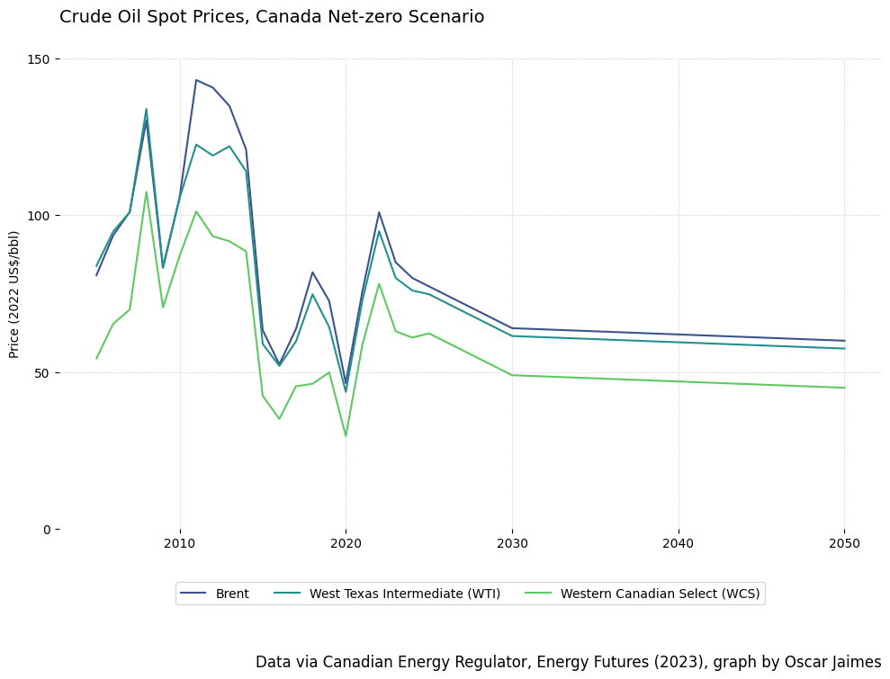
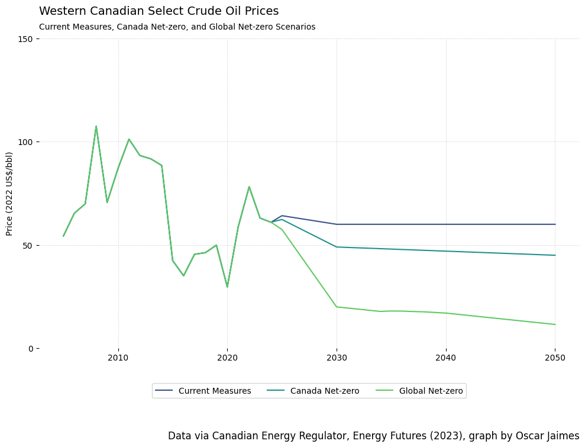
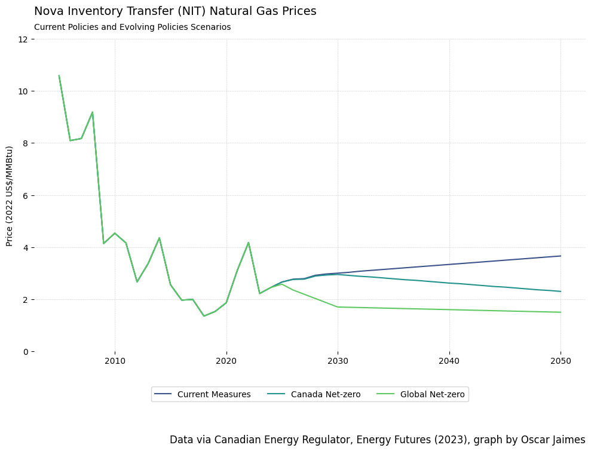
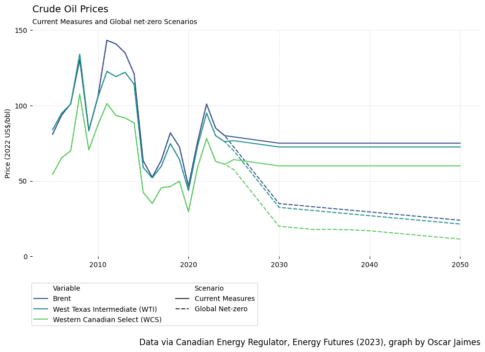

'''Dataset Information---------------------Canada’s Energy Future 2023: Energy Supply and Demand Projections to 2050 - benchmark-prices-2023'''DATA_URL ='https://www.cer-rec.gc.ca/open/energy/energyfutures2023/benchmark-prices-2023.csv'benchmark_prices =None# fetch data from GOC and load it into pandas dataframeresponse = requests.get(DATA_URL)with BytesIO(response.content) as data: benchmark_prices = pd.read_csv(data)# Filter out unwanted column benchmark_prices.drop('Unnamed: 0', axis=1, inplace=True)
def create_line_graph(data, x, y, hue, title, y_label, caption, yticks, subtitle='', grouping=False, group_name='', legend_n_cols=1) ->None:''' Creates and shows a line graph based on the above parameters. This function will create a line graph based on any arbritrary data. '''# color and size palette = sns.color_palette("viridis", n_colors=data[hue].nunique()) plt.figure(figsize=(10, 8))# plot the line based on groupingif grouping: sns.lineplot(data=data, x=x, y=y, hue=hue, style=group_name, dashes=True, palette=palette)else: sns.lineplot(data=data, x=x, y=y, hue=hue, palette=palette)# add title and subtitle plt.gca().text(0, 1.07, title, transform=plt.gca().transAxes, fontsize=14, verticalalignment='bottom', ha='left')if subtitle: plt.gca().text(0, 1.05, subtitle, transform=plt.gca().transAxes, verticalalignment='top', ha='left')# format axes plt.ylabel(y_label) plt.xlabel('') plt.yticks(yticks)# create and position legend bbox_to_anchor = (0.5ifnot grouping else0.25, -0.10) plt.legend(loc='upper center', bbox_to_anchor=bbox_to_anchor, ncol=legend_n_cols)# caption/source text plt.text(x=1, y=-0.3ifnot grouping else-0.4, s=caption, transform=plt.gca().transAxes, ha='right', va='bottom', fontsize=12)# display final graph plt.grid(True, which='both', color='lightgray', linestyle='--', linewidth=0.5) sns.despine(left=True, bottom=True) plt.tight_layout() plt.show()
Code
def create_interactive_line_graph(df, x, y, title, xAxisTitle, yAxisTitle):''' Creates and shows an interactive line graph using plotly based on the above parameters. '''# Create traces, one for each combination of Scenario and Variable traces = [] first_scenario = df['Scenario'].iloc[0]for scenario in df['Scenario'].unique():for variable in df['Variable'].unique(): df_filtered = df[(df['Scenario'] == scenario) & (df['Variable'] == variable)] traces.append( go.Scatter( x=df_filtered[x], y=df_filtered[y], mode='lines+markers', name=f"{scenario} - {variable}", visible=(scenario == first_scenario) ) )# Create layout with dropdown layout = go.Layout( title=title, xaxis=dict(title=xAxisTitle), yaxis=dict(title=yAxisTitle), autosize=True, updatemenus=[ {'buttons': [ {'args': [{'visible': [scenario in trace.name for trace in traces]}],'label': scenario,'method': 'update' }for scenario in df['Scenario'].unique() ],'direction': 'down','showactive': True,'x': 0.5,'xanchor': 'center','y': 1.12,'yanchor': 'top' } ], legend=dict( x=0, y=-0.2, orientation="h", xanchor='left', yanchor='top' ) )# Create the figure fig = go.Figure(data=traces, layout=layout)# Show the first scenario by default first_scenario = df['Scenario'].iloc[0] fig.update_layout( updatemenus=[ {'buttons': [ {'args': [{'visible': [scenario in trace.name for trace in traces]}],'label': scenario,'method': 'update' }for scenario in df['Scenario'].unique() ],'direction': 'down','showactive': True,'active': list(df['Scenario'].unique()).index(first_scenario) } ] )# Show the figure fig.show()
WTI Prices - Current Measures
Code
current_measures_prices = benchmark_prices# Filter the benchmark_prices table to:# only have WTI prices for the 'Current Measures' Scenario# only incluide years that are multiples of 5 starting at 2020current_measures_prices = current_measures_prices[ (current_measures_prices['Variable'] =='West Texas Intermediate (WTI) - 2022 US$/bbl') & (current_measures_prices['Scenario'] =='Current Measures') & (current_measures_prices['Year'] >=2020) & (current_measures_prices['Year'] %5==0)]# Remove columns other than Year and Valuecurrent_measures_prices = current_measures_prices[['Year', 'Value']]# Update the column names for tablecurrent_measures_prices.columns = ['Year', 'Price ($2022/bbl)']# Create and style table to showcurrent_measures_table = format_table( dataframe=current_measures_prices, title='West Texas Intermediate (WTI) prices ($2022 per barrel) in the Current Measures scenario of the Canadian Energy Regulator’s Canada’s Energy Future (2023) report', width='50%')# Visualize the tablecurrent_measures_table
West Texas Intermediate (WTI) prices ($2022 per barrel) in the Current Measures scenario of the Canadian Energy Regulator’s Canada’s Energy Future (2023) report
Year
Price ($2022/bbl)
2020
43.66
2025
76.67
2030
72.50
2035
72.50
2040
72.50
2045
72.50
2050
72.50
Crude Oil Prices - Canada Net-Zero
Code
# filter for Canada Net-zero scenarionet_zero_prices = benchmark_prices[benchmark_prices['Scenario'] =='Canada Net-zero'].copy()# strip the 2022 US $/bbl from each of the variable namesnet_zero_prices['Variable'] = net_zero_prices['Variable'].str.split('-').str[0].str.strip()# filter out prices for Brent, WTI, and WCSincluded = ['Brent', 'Western Canadian Select (WCS)', 'West Texas Intermediate (WTI)']net_zero_prices = net_zero_prices[net_zero_prices["Variable"].isin(included)]# Create & Show line graph for crude oil spot prices in Canda Net-zero Scenariocreate_line_graph( data=net_zero_prices, x='Year', y='Value', hue='Variable', title='Crude Oil Spot Prices, Canada Net-zero Scenario', y_label='Price (2022 US$/bbl)', caption='Data via Canadian Energy Regulator, Energy Futures (2023), graph by Oscar Jaimes', yticks=[n for n inrange(151) if n %50==0], subtitle=None, legend_n_cols=3, grouping=False, group_name=None)

WCS Crude Oil Prices
Code
# filter benchmark prices to only include WCS Datawcs_data = benchmark_prices[ benchmark_prices["Variable"] =='Western Canadian Select (WCS) - 2022 US$/bbl']# show line graph for WCS prices across multiple scenarioscreate_line_graph( data=wcs_data, x='Year', y='Value', hue='Scenario', title='Western Canadian Select Crude Oil Prices', y_label='Price (2022 US$/bbl)', caption='Data via Canadian Energy Regulator, Energy Futures (2023), graph by Oscar Jaimes', yticks=[i for i inrange(151) if i %50==0], subtitle='Current Measures, Canada Net-zero, and Global Net-zero Scenarios', legend_n_cols=3, grouping=False, group_name=None)

NIT Natural Gas Prices
Code
# filter benchmark prices to only include NIT Datanit_data = benchmark_prices[ benchmark_prices["Variable"] =='Nova Inventory Transfer (NIT) - 2022 US$/MMBtu']# create line graph of NIT prices across different scenarioscreate_line_graph( data=nit_data, x='Year', y='Value', hue='Scenario', title='Nova Inventory Transfer (NIT) Natural Gas Prices', y_label='Price (2022 US$/MMBtu)', caption='Data via Canadian Energy Regulator, Energy Futures (2023), graph by Oscar Jaimes', yticks=[n for n inrange(13) if n %2==0], subtitle='Current Policies and Evolving Policies Scenarios', legend_n_cols=3, grouping=False, group_name=None)

Crude Oil Prices - Current & Global Net-zero
Code
# filter for Current Measures and Global Net-zero scenariosvalid_scenarios = ['Current Measures', 'Global Net-zero']oil_prices = benchmark_prices[benchmark_prices['Scenario'].isin(valid_scenarios)].copy()# strip the 2022 US $/bbl from each of the variable namesoil_prices['Variable'] = oil_prices['Variable'].str.split('-').str[0].str.strip()# filter out prices for Brent, WTI, and WCSvalid_types = ['Brent', 'Western Canadian Select (WCS)', 'West Texas Intermediate (WTI)']oil_prices = oil_prices[oil_prices["Variable"].isin(valid_types)]# Create line graph to show grouped oil prices across different scenarios"create_line_graph( data=oil_prices, x='Year', y='Value', hue='Variable', title='Crude Oil Prices', subtitle='Current Measures and Global net-zero Scenarios', y_label='Price (2022 US$/bbl)', caption='Data via Canadian Energy Regulator, Energy Futures (2023), graph by Oscar Jaimes', yticks=[n for n inrange(int(oil_prices['Value'].max() +10)) if n %50==0], grouping=True, group_name='Scenario', legend_n_cols=2)

Interactive Graphs
As an extension of the challenge graph, I wanted to visualize the data such that a user is able to interact with it. Instead of showing multiple line series on the same graph, I figured it would be a good idea to let a user choose what scenario they want to see prices for and then visually compare the changes.
The following graphs were created with the plotly library. You can:
Filter the graph by Scenario
Select/Unselect legend items to view in the graph
Zoom into a bounding box on the graph
Download the plot as a PNG
Reset the view by double-clicking on the graph
Code
# strip the 2022 US $/bbl from each of the variable namesoil_prices = benchmark_pricesoil_prices['Variable'] = oil_prices['Variable'].str.split('-').str[0].str.strip()# filter out prices for Brent, WTI, and WCSvalid_types = ['Brent', 'Western Canadian Select (WCS)', 'West Texas Intermediate (WTI)', 'Canadian Light Sweet (CLS)']oil_prices = oil_prices[oil_prices["Variable"].isin(valid_types)]# show interactive line graphcreate_interactive_line_graph( df=oil_prices, x='Year', y='Value', title='Oil Prices Over Time by Scenario and Variable', xAxisTitle='Year', yAxisTitle='Price(2022 US $/bbl)')
Code
# strip the 2022 US $/bbl from each of the variable namesoil_prices = benchmark_pricesoil_prices['Variable'] = oil_prices['Variable'].str.split('-').str[0].str.strip()# filter out prices for Brent, WTI, and WCSvalid_types = ['Brent', 'Western Canadian Select (WCS)', 'West Texas Intermediate (WTI)', 'Canadian Light Sweet (CLS)']oil_prices = oil_prices[~oil_prices["Variable"].isin(valid_types)]# show interactive line graphcreate_interactive_line_graph( df=oil_prices, x='Year', y='Value', title='Natural Gas Prices Over Time by Scenario and Variable', xAxisTitle='Year', yAxisTitle='Price (2022 US$/MMBtu)')